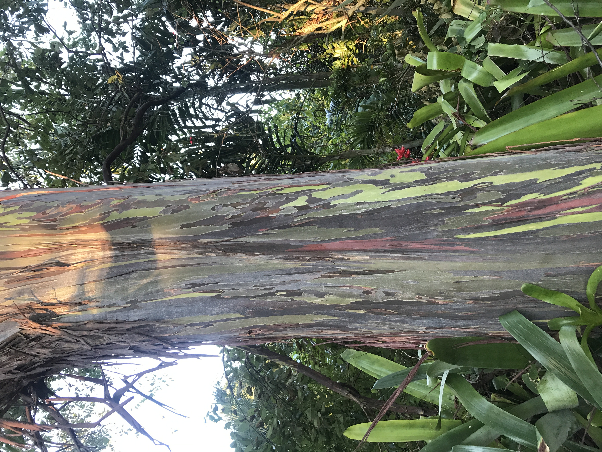
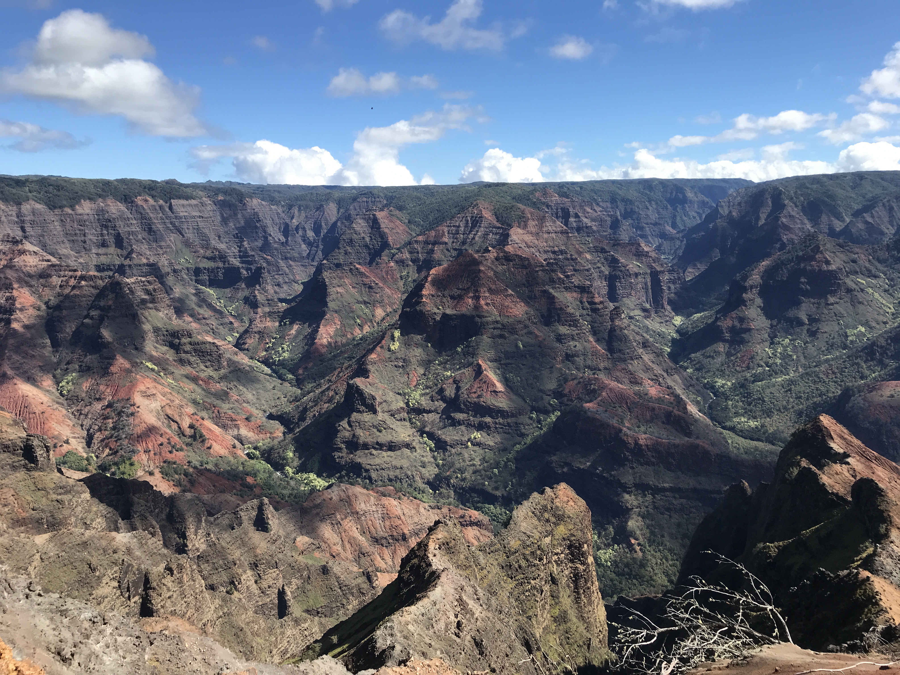

First Trip

Hawaii is by far my wife and I favorite place to visit out of all other places we have been to.
We made our maiden voyage in February of 2019 for our anniversary. On that trip we visited TWO different islands.
- Oahu
- -Oahu is where the capital is located, Honolulu. Bustling city, if it weren't for the beaches and gorgeous views, you would almost forget you were in paradise
- Kauai
- -Kauai is nicknamed the 'garden isle' because of the lush forestry you will see everywhere. Part of the original jurassic park was filmed here.